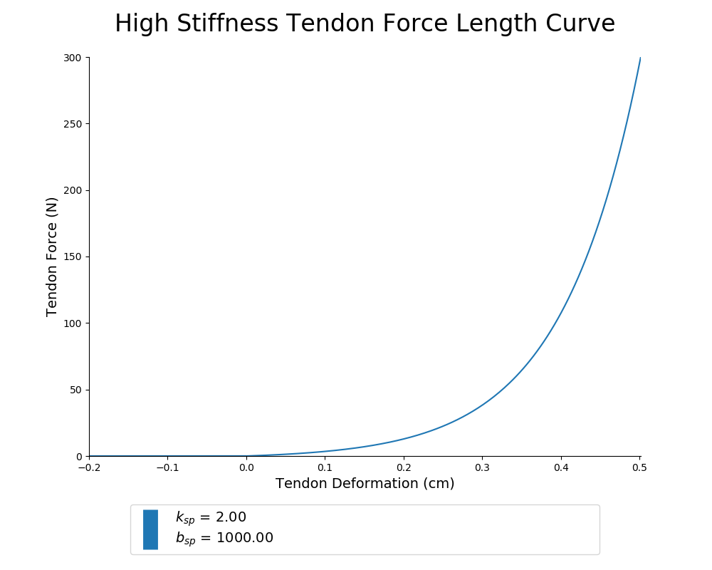

/2020_05_20_130915/MAE
/2020_05_20_130915
/2020_05_20_131052/MAE
/2020_05_20_131052
/2020_05_20_131220/MAE
/2020_05_20_131220
/2020_05_20_131447/MAE
/2020_05_20_131447
/2020_05_20_131614/MAE
/2020_05_20_131614
/2020_05_20_131742/MAE
/2020_05_20_131742
/2020_05_20_131911/MAE
/2020_05_20_131911
/2020_05_20_132039/MAE
/2020_05_20_132039
/2020_05_20_132209/MAE
/2020_05_20_132209
/2020_05_20_132336/MAE
/2020_05_20_132336
/2020_05_20_132504/MAE
/2020_05_20_132504
/2020_05_20_132631/MAE
/2020_05_20_132631
/2020_05_20_132757/MAE
/2020_05_20_132757
/2020_05_20_132931/MAE
/2020_05_20_132931
/2020_05_20_133104/MAE
/2020_05_20_133104
/2020_05_20_133234/MAE
/2020_05_20_133234
/2020_05_20_133412/MAE
/2020_05_20_133412
/2020_05_20_133543/MAE
/2020_05_20_133543
/2020_05_20_133710/MAE
/2020_05_20_133710
/2020_05_20_133844/MAE
/2020_05_20_133844
/2020_05_20_134018/MAE
/2020_05_20_134018
/2020_05_20_134147/MAE
/2020_05_20_134147
/2020_05_20_134314/MAE
/2020_05_20_134314
/2020_05_20_134442/MAE
/2020_05_20_134442
/2020_05_20_134611/MAE
/2020_05_20_134611
/2020_05_20_134739/MAE
/2020_05_20_134739
/2020_05_20_134909/MAE
/2020_05_20_134909
/2020_05_20_135038/MAE
/2020_05_20_135038
/2020_05_20_135209/MAE
/2020_05_20_135209
/2020_05_20_135344/MAE
/2020_05_20_135344
/2020_05_20_135513/MAE
/2020_05_20_135513
/2020_05_20_135643/MAE
/2020_05_20_135643
/2020_05_20_135821/MAE
/2020_05_20_135821
/2020_05_20_135948/MAE
/2020_05_20_135948
/2020_05_20_140116/MAE
/2020_05_20_140116
/2020_05_20_140241/MAE
/2020_05_20_140241
/2020_05_20_140410/MAE
/2020_05_20_140410
/2020_05_20_140610/MAE
/2020_05_20_140610
/2020_05_20_140823/MAE
/2020_05_20_140823
/2020_05_20_140957/MAE
/2020_05_20_140957
/2020_05_20_141128/MAE
/2020_05_20_141128
/2020_05_20_141252/MAE
/2020_05_20_141252
/2020_05_20_141419/MAE
/2020_05_20_141419
/2020_05_20_141546/MAE
/2020_05_20_141546
/2020_05_20_141715/MAE
/2020_05_20_141715
/2020_05_20_141846/MAE
/2020_05_20_141846
/2020_05_20_142016/MAE
/2020_05_20_142016
/2020_05_20_142143/MAE
/2020_05_20_142143
/2020_05_20_142313/MAE
/2020_05_20_142313
/2020_05_20_142445/MAE
/2020_05_20_142445
/Generalization_Trajectories/angleSin_stiffSin
/Generalization_Trajectories/angleSin_stiffStep
/Generalization_Trajectories/angleStep_stiffSin
/Generalization_Trajectories/angleStep_stiffStep
/Generalization_Trajectories
/Results_2020_05_18-01
/Results_2020_05_20-01
/sample_babbling_plots
/trials/2020_05_18_160615/MAE
/trials/2020_05_18_160615
/trials/2020_05_18_161247/MAE
/trials/2020_05_18_161247
/trials/2020_05_18_161613/MAE
/trials/2020_05_18_161613
/trials/2020_05_18_161806/MAE
/trials/2020_05_18_161806
/trials/2020_05_18_162155/MAE
/trials/2020_05_18_162155
/trials/2020_05_18_162936/MAE
/trials/2020_05_18_162936
/trials/2020_05_18_163218/MAE
/trials/2020_05_18_163218
/trials/2020_05_18_163546/MAE
/trials/2020_05_18_163546
/trials/2020_05_18_164056/MAE
/trials/2020_05_18_164056
/trials/2020_05_18_164557/MAE
/trials/2020_05_18_164557
/trials/2020_05_18_165319/MAE
/trials/2020_05_18_165319
/trials/2020_05_18_165723/MAE
/trials/2020_05_18_165723
/trials/2020_05_18_170309/MAE
/trials/2020_05_18_170309
/trials/2020_05_18_171052/MAE
/trials/2020_05_18_171052
/trials/2020_05_18_171619/MAE
/trials/2020_05_18_171619
/trials/2020_05_18_172123/MAE
/trials/2020_05_18_172123
/trials/2020_05_18_172611/MAE
/trials/2020_05_18_172611
/trials/2020_05_18_172953/MAE
/trials/2020_05_18_172953
/trials/2020_05_18_173826/MAE
/trials/2020_05_18_173826
/trials/2020_05_18_174328/MAE
/trials/2020_05_18_174328
/trials/2020_05_18_174701/MAE
/trials/2020_05_18_174701
/trials/2020_05_18_175500/MAE
/trials/2020_05_18_175500
/trials/2020_05_18_180321/MAE
/trials/2020_05_18_180321
/trials/2020_05_18_180929/MAE
/trials/2020_05_18_180929
/trials/2020_05_18_181317/MAE
/trials/2020_05_18_181317
/trials/2020_05_18_181834/MAE
/trials/2020_05_18_181834
/trials/2020_05_18_182417/MAE
/trials/2020_05_18_182417
/trials/2020_05_18_182929/MAE
/trials/2020_05_18_182929
/trials/2020_05_18_183829/MAE
/trials/2020_05_18_183829
/trials/2020_05_18_184521/MAE
/trials/2020_05_18_184521
/trials/2020_05_18_184847/MAE
/trials/2020_05_18_184847
/trials/2020_05_18_185706/MAE
/trials/2020_05_18_185706
/trials/2020_05_18_190324/MAE
/trials/2020_05_18_190324
/trials/2020_05_18_192731/MAE
/trials/2020_05_18_192731
/trials/2020_05_18_193344/MAE
/trials/2020_05_18_193344
/trials/2020_05_18_193755/MAE
/trials/2020_05_18_193755
/trials/2020_05_18_194203/MAE
/trials/2020_05_18_194203
/trials/2020_05_18_194713/MAE
/trials/2020_05_18_194713
/trials/2020_05_18_195205/MAE
/trials/2020_05_18_195205
/trials/2020_05_18_195635/MAE
/trials/2020_05_18_195635
/trials/2020_05_18_200231/MAE
/trials/2020_05_18_200231
/trials/2020_05_18_200720/MAE
/trials/2020_05_18_200720
/trials/2020_05_18_201349/MAE
/trials/2020_05_18_201349
/trials/2020_05_18_201710/MAE
/trials/2020_05_18_201710
/trials/2020_05_18_202540/MAE
/trials/2020_05_18_202540
/trials/2020_05_18_203103/MAE
/trials/2020_05_18_203103
/trials/2020_05_18_203541/MAE
/trials/2020_05_18_203541
/trials/2020_05_18_205023/MAE
/trials/2020_05_18_205023
/trials/2020_05_18_205439/MAE
/trials/2020_05_18_205439
/trials/2020_05_18_205818/MAE
/trials/2020_05_18_205818
README.md for Figures Created on 2020/05/18 at 14:25.27 PST.
Notes
Extremely high value of tendon stiffness.
Parameters
Figures
 Figure 1: Caption for tendon_stiffness_sweep_01-01.png.